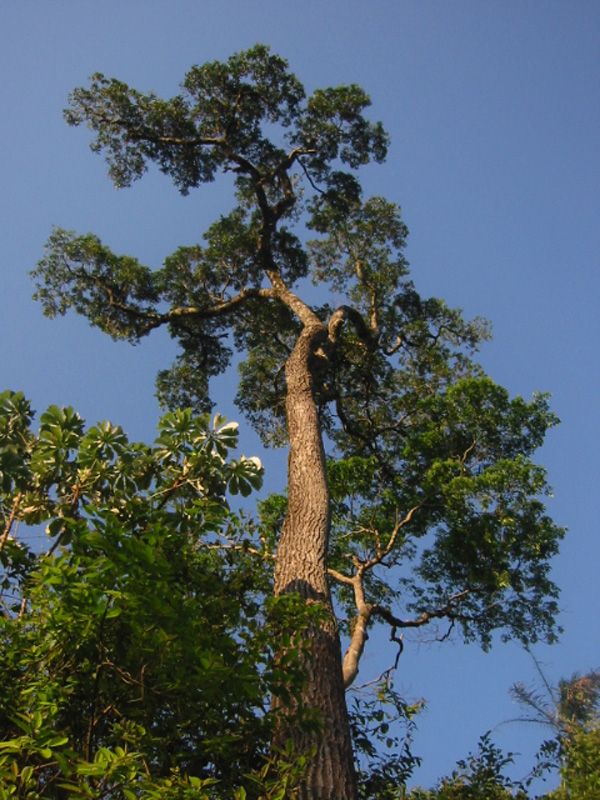
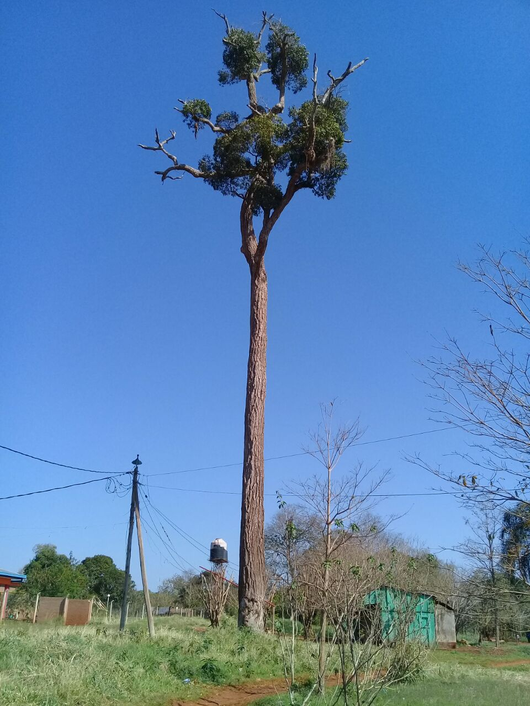
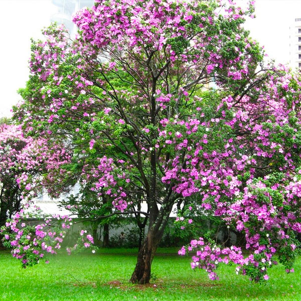
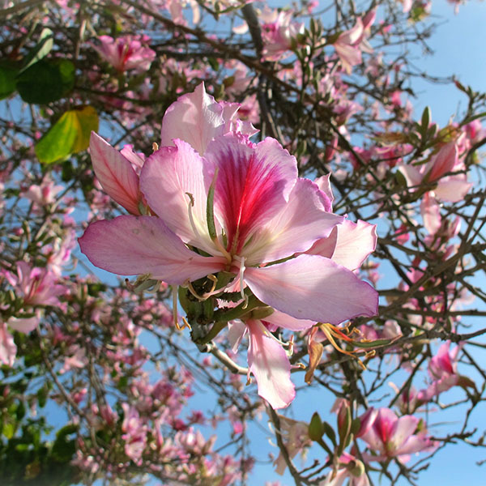
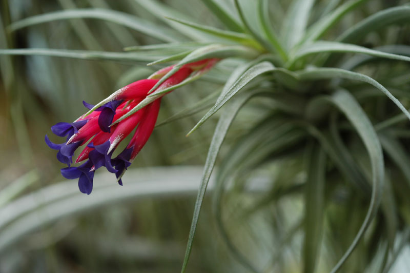

Palo Rosa
Una de las especies más típicas del Parque es el Palo Rosa, un árbol que supera los 40 metros de altura, lo que lo hace sobrepasar la altura media de todos los otros árboles de la selva. Su nombre se debe al color de su madera, que se nota más cuando el corte es reciente. Debido a que su número es escaso está declarado Monumento Nacional.


Arbol Orquídea
Son una familia de plantas monocotiledóneas que se distinguen por la complejidad de sus flores y por sus interacciones ecológicas con los agentes polinizadores y con los hongos con los que forman micorrizas.


Clavel del Aire
Es un género de plantas mayoritariamente epifitas que, con más de seiscientas cincuenta especies aceptadas, es el más diverso de la familia Bromeliaceae. Se encuentran en los desiertos, bosques y montañas de Centroamérica, Sudamérica, en México y el sur de Estados Unidos en Norteamérica.
